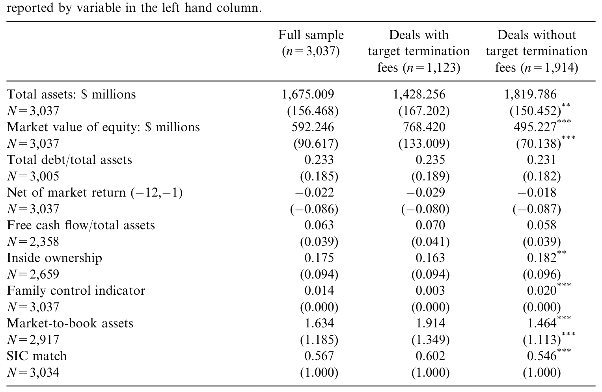
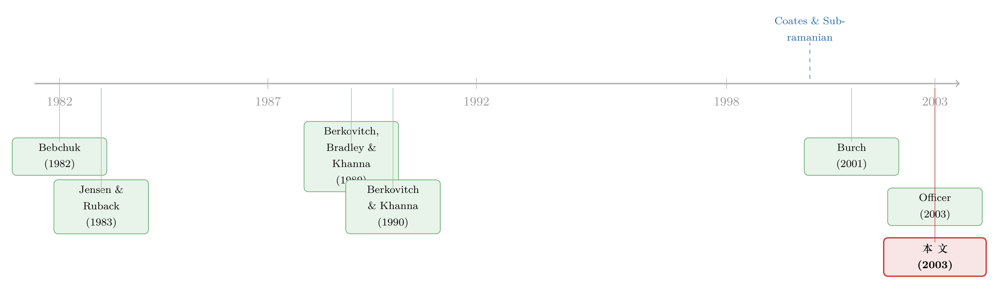

「分手费」到底是锁门的链条，还是请客的请柬？
本文读的是 Bates & Lemmon (2003, Journal of Financial Economics)：他们用 1989–1998 年间近三千桩并购，检验合并协议里的「终止费（termination fee）」到底是管理层用来挡住更高出价者的「防御工具」，还是补偿竞标方、把交易撮合成的「效率合约」。证据站在后者这一边——含目标方终止费的交易，成交率更高、溢价不降反略升。
1 一桩 18 亿美元的「分手费」
1999 年 11 月，美国家庭用品公司（American Home Products，AHP）宣布以 750 亿美元换股收购华纳-兰伯特（Warner Lambert）。协议里藏着一个数字：如果华纳在非监管原因下毁约，要赔给 AHP 18 亿美元现金。这是当时有史以来最大的一笔终止费，几乎等于 AHP 1998 年一整年的净利润。
然后，半路杀出了辉瑞（Pfizer），开出 800 亿美元的更高报价。辉瑞向特拉华衡平法院递了状子，措辞很重：这 18 亿美元的终止费是一种「draconian defense measure（严苛的防御措施）」，它会让华纳的董事会「连考虑辉瑞的报价都不敢」。一番旷日持久的法律与财务拉锯之后（期间 AHP 股价大约跌了 25%），辉瑞最终以 900 亿美元拿下了华纳——代价是连那 18 亿美元的终止费也一并替华纳付了。
这个故事把一个尖锐的问题摆在桌面上：终止费，看上去就是一根拴在目标公司门上的链条。它会不会挡住那些本可以出更高价、让股东赚更多的「第三方」？如果会，那它就是管理层损公肥私的工具。可如果它真这么坏，为什么从 1989 到 1998，越来越多的交易抢着用它？
2 两种针锋相对的故事
先把名词说清楚。目标方终止费（target termination fee），指的是目标公司答应——若协议被终止——要付一笔费用给竞标方；竞标方终止费（bidder termination fee）则反过来，是竞标方答应赔给目标公司。
这玩意儿的流行是爆炸式的。1989 年，只有约 2% 的交易写进了目标方终止费、不到 1% 写进了竞标方终止费；到 1998 年，超过 60% 的交易含目标方费用、约 12.8% 含竞标方费用。但有意思的是，相对于交易规模，费用本身并没怎么涨：1989 年平均一笔费用 16.57 百万美元、占交易价值的 2.7%；到样本末期涨到 41.15 百万美元，可占比也才 3.2%。绝对值不小，相对值很小——记住这一点，它是后面所有反转的钥匙。
围绕「为什么用它」，文献里有两个针锋相对的故事。
第一个，叫管理层自利假说（managerial discretion hypothesis）。它说：在任管理层把终止费设得足够高，就能锁定一个「友好」的竞标方、把那些有敌意但出价可能更高的第三方挡在门外——代价由股东承担。为什么管理层愿意这么干？因为他可以拿到桌底下的「侧付（side payment）」：一纸新东家的雇佣合同，或一份加码的离职补偿（这正是 Hartzell, Ofek, Yermack (2003) 笔下的故事，关于目标 CEO 如何在谈判桌底下为自己安排好后路，可参见《卖掉公司之前，老板先给自己开了张支票》）。这个假说有个清晰的可证伪推论：终止费的使用，应当与目标公司里的代理冲突（agency conflict）正相关——比如更糟的业绩、更多的自由现金流（free cash flow）。
第二个，叫效率假说（efficiency hypothesis）。它说：一桩公开的报价，本身就是给全市场的一份「免费情报」——它泄露了这家目标值多少钱、协同空间有多大。早到的竞标方掏了真金白银做尽调、谈判，却要承担一个风险：一个搭便车的高价者读了它的报价，半路杀进来抢走战利品。Berkovitch, Bradley, and Khanna (1989) 指出，目标方终止费恰恰能对冲这种「搭便车成本」——它给初始竞标方一个旱涝保收的下限，从而鼓励竞标、鼓励私人信息的披露。这个假说的推论恰好相反：终止费应当与竞标成本、信息外部性正相关，而与代理冲突无关；而且，只要管理层是在「为股东好」时才用它，那么含费交易的溢价与股东福利，不应当更低。
两个故事，预测正好拧着。剩下的，就是让数据来当裁判。
3 一个被很多人忽略的算术：费用真能「锁门」吗？
在跑数据之前，先做一道算术——这道算术，是整篇论文的隐形支点。
终止费要想真的吓退一个更高价的竞标方，它得「够大」。论文把这层逻辑讲得很直白：如果终止费超过了「高价竞标方的保留价」与「已签约的低价报价」之差，那么高价方进场后所有的盈余都会被费用吞掉，于是他干脆不来了。考虑到竞标本身有成本，把这句话翻译成一行不等式就是——高价竞标方只在下面这个条件成立时才会进场报价：
其中 \(T\) 就是那笔目标方终止费。这个不等式说的是：终止费只有大到吃掉「高价方相对低价方的真实溢价、再扣掉竞标成本」时，才真正起到「锁门」的作用。
现在把第 2 节那把钥匙插进来：终止费平均只占交易价值的 3% 左右；而目标股东在并购中的公告期收益，按 Jensen and Ruback (1983)、Jarrell et al. (1988) 直到 Andrade et al. (2000) 的估计，普遍在 16% 到 34% 之间。换句话说，\(V_H - V_L\) 这块盈余，通常远远大于那 3% 的费用。一笔小小的终止费，多数时候根本够不着「锁门」的门槛。司法判决也是这么想的：Brazen v. Bell Atlantic (1997) 一案里，特拉华最高法院放行了 Bell Atlantic 那笔 5.5 亿美元的终止费，理由正是它「并非大得离谱」——它只占 210 亿美元交易额的 2.5%。
这恰恰是「锁门 vs. 关灯」之争的关键。同一份条款，反对者看到的是一根挡路的链条，支持者看到的却是一盏「先把路照亮、好让人愿意来」的灯。关于这场争论后来如何被数据反复重审（包括一篇指出旧结论其实败给了坏数据的后续研究），可参见《终止费到底是「锁门」还是「关灯」？》。
4 识别策略：让数据在两个故事之间做裁判
这是一篇以观察性数据为主的实证论文，没有外生冲击式的自然实验。它的识别逻辑，靠的是「两个假说预测相反、于是相关性的方向能区分它们」。具体分三步走：
第一步，成交概率。 把「交易是否完成」对「是否含目标方终止费」以及一堆控制变量做回归（probit 类设定），看费用是否真的改变了成交的可能性。
第二步，决定因素。 把「是否写入终止费」当成被解释变量，去问：它到底跟什么相关？是跟竞标成本的代理变量（成长机会、换股交易、目标规模、竞标方的既有持股 toehold）相关，还是跟代理冲突的代理变量（事前股价表现、自由现金流、内部人持股）相关？这一步是两个假说正面对撞的擂台。
第三步，财富效应。 用三把尺子量目标股东的得失：交易溢价（premium）、公告期超额收益（day −1 到 +1）、以及整段拍卖的累计超额收益（cumulative auction return，从首次报价前 42 个交易日一直算到竞价序列结束）。作者还用联立方程（simultaneous equations）处理「溢价和费用是同时谈出来的」这层内生性。
5 数据
样本取自 Securities Data Corporation（SDC）的并购库，1989–1998 年间共 3,533 桩公告。筛选条件：交易价值公开、SDC 把交易形式定义为「merger」或「acquisition」、状态为「completed」或「withdrawn」；目标公司须在 CRSP 有公告日前后三天的非缺失收益数据、且在 Compustat 有并购前一财年的总资产账面值。这些限制把样本压到 3,037 个观测。
如表 3 所示，作者按「是否含终止费」把目标公司的特征摊开来比较——这张描述性统计表，是后面所有回归的底色。

Table 3: provides descriptive data about the target firms in our sample delineated
6 主要结果：反转就在这里
先看成交概率。 目标方终止费对成交概率有「substantial and positive」的影响。乍一看，这像是坐实了「费用截断了本该自然展开的竞价过程」——也就是支持「锁门」说。
但真正关键的一步，在决定因素那张擂台上。 结果几乎一边倒地偏向效率假说：目标方终止费更常出现在有显著成长机会的资产、换股交易、以及规模更大的目标身上；而当竞标方已经握有目标一大块股权（toehold）时，费用反而更少用——因为持股本身已经压低了搭便车风险。这些全都是「竞标成本高、信息外部性大」的标志。
然后是反转的高潮。 为检验管理层自利假说，作者把费用和各种代理冲突指标放在一起看，结果与该假说的预测南辕北辙：
- 自由现金流与终止费的使用不相关——这一刀直接砍在管理层自利假说的腰上；
- 并购前的股价表现，提供终止费的目标反而显著更好——业绩更好的公司更爱用它，这跟「业绩差的管理层用它来自保」完全反着来；
- 唯一对管理层自利假说友好的，是当内部人持有目标一大块股份时，终止费略微更少用——但作者明说，这个效应「economically quite small」，经济意义很小。
最后是财富效应这把尺子。 没有任何证据表明终止费让目标股东系统性地变差：控制了交易与公司特征后，含费交易的溢价反而略高；公告期（−1 到 +1）的超额收益不随是否含费而变；而整段拍卖的累计超额收益，对含费目标显著更高——作者把这一点主要追溯到更高的成交率。说白了，费用没有压低你卖出去的价钱，反而提高了你「真能卖出去」的概率。
这里要诚实：上方提供的论文正文是截断版，回归表里的具体系数与 t 值没有完整呈现。我能确认的是这些结果的方向与显著性陈述（自由现金流不相关、事前业绩显著更好、内部人效应「很小」、累计拍卖收益显著更高），以及前文那些描述性量级（费用占比 3%、目标收益 16%–34% 等）；我不会替作者编造一个具体的系数。
把这三步连起来，故事就立住了：终止费不是管理层挡门的链条，而是改善缔约环境、把目标在谈判桌上的价值做大的效率工具。这也正是与之同期、结论一致的 Officer (2003) 所发现的——费用虽与竞价竞争负相关，却并未显著压低目标股东拿到的溢价。
7 投标方的费用：一份藏起来的「保险单」
论文还顺手处理了一个几乎没人研究过的对象：竞标方也会给目标终止费，只是频率低得多（0.1% → 12.8%）。这块没有现成理论，作者提出了一个保险假说（insurance hypothesis）：竞标方费用对目标股东是有价值的，因为它预先锁定了一桩尚不确定的交易里的一部分预期收益。
证据与之吻合：竞标方费用更常见于大额交易和换股交易——这些正是谈判成本（含价格发现）高、且一旦失败代价更大的场合（大目标本就更难成为收购对象，见 Palepu, 1986; Comment and Schwert, 1995）。更妙的是「保险是要付费的」这层推论：竞标方费用与目标方费用的同时出现正相关，又与溢价、目标股东财富负相关——也就是说，目标为了买到这份保险，付出的对价是「对等的目标方费用」和「略低的溢价」。一来一回，逻辑闭环了。
这其实把 Berkovitch and Khanna (1990) 那条线推进了一步：终止费可以被目标策略性地用来给「次优竞标方」激励，从而改善收益在股东之间的分配（关于卖方为何有时该「故意偏心」地对待不同竞标方，可参见《卖公司这件事：为什么最优的玩法，是「故意偏心」》）。
8 文献脉络
这条研究的源头，是一条关于「在任管理层如何撮合拍卖」的理论支流。早在 Bebchuk (1982) 就在争论该不该便利竞争性要约；Jensen and Ruback (1983) 给出了并购收益分配的经典经验事实（目标赚得多、合并净收益薄）。Shleifer and Vishny (1986)、Giammarino and Heinkel (1986) 等则刻画了管理层用绿邮、用接受首个报价等手段影响竞价的动机。
真正与本文血脉相连的，是 Berkovitch, Bradley, and Khanna (1989) 和 Berkovitch and Khanna (1990)——他们论证了「价值减损式」的防御策略（终止费、锁定期权）如何反而能鼓励搜寻、提高竞价强度、抬高目标溢价。这把「防御工具未必有害」的可能性钉在了理论地图上。

司法这条线同样重要：Paramount v. QVC (1994) 否掉了股权锁定期权、却放过了那笔 1 亿美元的终止费；Brazen v. Bell Atlantic (1997) 则直接为终止费背书。Coates and Subramanian (2000) 记录了这些判例如何重塑了锁定条款的使用。本文就站在这个交叉口：它是第一批系统检验终止费决定因素与财富后果的实证工作之一，与同期的 Officer (2003)、研究锁定期权的 Burch (2001) 互为补充，共同把「条款—结果」这件事从法律辩论拉进了大样本经验检验。
评论与延伸（Q&A + 研究方向）
(a) 几个可能的疑问
Q：「含费交易成交率更高」难道不正说明费用截断了竞价吗？
单看成交率确实可以这么读。但作者的反驳在于决定因素与财富效应：如果费用是靠「锁门」抬高成交率，溢价和目标收益应当被压低；可数据里溢价不降反略升、累计拍卖收益显著更高。更高的成交率因此被解读为「该成的交易没有被搭便车搅黄」，而非「该来的高价者被挡在门外」。
Q：自由现金流与费用不相关，就能否掉管理层自利假说吗？
不能单独否掉，但它是很有分量的一击。管理层自利假说最干净的预测就是「费用与代理冲突正相关」。自由现金流不相关、事前业绩反而更好，两条核心代理变量同时与该假说作对；唯一支持它的内部人持股效应又「经济意义很小」。证据的天平因此明显偏向效率假说。
Q：这是观察性研究，会不会是遗漏变量在同时驱动「用费用」和「好结果」？
这是最该担心的地方。终止费是内生选择，作者用联立方程处理溢价与费用的同时决定，并控制大量交易/公司特征，但没有外生冲击。判例冲击（Paramount/Brazen 后费用使用骤增）原则上可作为时间维度的准实验，但本文主要把它当背景而非识别工具。严格的因果话语在这里要留有余地。
Q：终止费和锁定期权（lockup option）是一回事吗？
不是，但功能上是替代品。锁定期权给竞标方买入目标库存股或核心资产的权利，杀伤力可能更大、也更容易被法院否掉（Paramount 案即如此）。Burch (2001) 专门研究锁定期权，发现它虽抑制竞争却同样伴随更高的目标收益。本文把锁定期权的存在作为控制变量纳入。
Q：竞标方费用为什么对目标是「好事」，却又压低了目标溢价？
因为它是一份保险：在交易仍不确定时，先替目标锁定一部分预期收益，对冲「煮熟的鸭子飞了」的风险。保险不是免费的，目标付的保费就体现为对等的目标方费用与略低的溢价。所以「负相关的溢价」非但不矛盾，反而是保险假说的指纹。
Q：那 18 亿美元的 Warner-Lambert 案，不正是费用挡路的反例吗？
表面上是——可结局恰恰相反：辉瑞照样进场，照样赢了，只是顺手替目标付了那笔费用。这反过来印证了第 3 节的算术：当 \(V_H-V_L\) 的盈余足够大，几个百分点的费用拦不住真正更高的出价，它只是改变了盈余的分配，而非阻断交易。
(b) 几个可能的研究问题与提案
- 判例冲击下的准实验
- 【经济故事】Paramount/Brazen 判决在 1994、1997 前后造成费用使用的跳变。若不同州、不同行业对判例的暴露程度不同，可以构造一个交错的「政策外生性」来识别费用对成交率/溢价的因果效应，而非相关。
-
【可行性】中。SDC + 判例时间点数据可得；难点在于找到合理的「暴露强度」横截面变异与平行趋势论证。
-
把终止费搬进信用市场：发债条款里的「分手费」
- 【经济故事】公司债与银团贷款里也有 make-whole、commitment fee 之类的「反悔成本」。同样的效率 vs. 自利之争是否成立？高反悔成本是改善了缔约、还是锁定了关系型债权人？
-
【可行性】中。Mergent FISD、DealScan 有条款字段；识别仍需外生变异（如评级跨越、监管变化）。可与本博客流动性/信用市场线索接续。
-
外资股东在场时的终止费
- 【经济故事】当目标的大股东里有跨境机构投资者，监督强度与「友好交易」的政治经济学都会变化。外资是否更能压住管理层自利式的费用？
-
【可行性】中偏低。需把 13F/跨境持股与并购条款匹配，外资持股本身内生，识别偏难，但机制故事新颖。
-
费用的「最优大小」
- 【经济故事】本文回答了「用不用」，但没回答「该多大」。第 3 节的不等式暗示存在一个临界 \(T^*\)：刚好补偿竞标成本、又不触发锁门。实证上能否估出这个拐点，并检验偏离 \(T^*\) 是否预示更差的事后结果？
- 【可行性】中。需要费用金额、竞标成本代理与事后成交/诉讼数据；结构化估计 \(V_H-V_L\) 是主要难点。
参考文献
- Bates, T.W., Lemmon, M.L. (2003). Breaking up is hard to do? An analysis of termination fee provisions and merger outcomes. Journal of Financial Economics 69(3), 469–504.
- Bebchuk, L.A. (1982). The case for facilitating competing tender offers. Harvard Law Review 95, 1028–1056.
- Berkovitch, E., Bradley, M., Khanna, N. (1989). Tender offer auctions, resistance strategies, and social welfare. Journal of Law, Economics, and Organization 5, 395–412.
- Berkovitch, E., Khanna, N. (1990). How target shareholders benefit from value-reducing defensive strategies in takeovers. Journal of Finance 45, 137–156.
- Burch, T. (2001). Locking out rival bidders: the use of lockup options in corporate mergers. Journal of Financial Economics 60, 103–142.
- Coates, J.C., Subramanian, G. (2000). A buy-side model of lockups: theory and evidence. Stanford Law Review 53, 307–396.
- Comment, R., Schwert, G.W. (1995). Poison or placebo? Evidence on the deterrence and wealth effects of modern antitakeover measures. Journal of Financial Economics 39, 3–43.
- Fishman, M. (1989). Preemptive bidding and the role of the medium of exchange in acquisitions. Journal of Finance 44(1), 41–57.
- Hartzell, J., Ofek, E., Yermack, D. (2003). What's in it for me? Personal benefits obtained by CEOs whose firms are acquired. Review of Financial Studies, forthcoming.
- Jennings, R.H., Mazzeo, M.A. (1993). Competing bids, target management resistance, and the structure of takeover bids. Review of Financial Studies 6, 883–909.
- Jensen, M.C., Ruback, R.S. (1983). The market for corporate control: the scientific evidence. Journal of Financial Economics 11, 5–50.
- McLaughlin, R.M. (1990). Investment-banking contracts in tender offers. Journal of Financial Economics 28, 209–233.
- Officer, M.S. (2003). Termination fees in mergers and acquisitions. Journal of Financial Economics, forthcoming.
- Palepu, K.G. (1986). Predicting takeover targets: a methodological and empirical analysis. Journal of Accounting and Economics 8, 3–35.
- Schwert, G.W. (2000). Hostility in takeovers: in the eyes of the beholder? Journal of Finance 55, 2599–2640.
- Servaes, H., Zenner, M. (1996). The role of investment banks in acquisitions. Review of Financial Studies 9, 787–815.